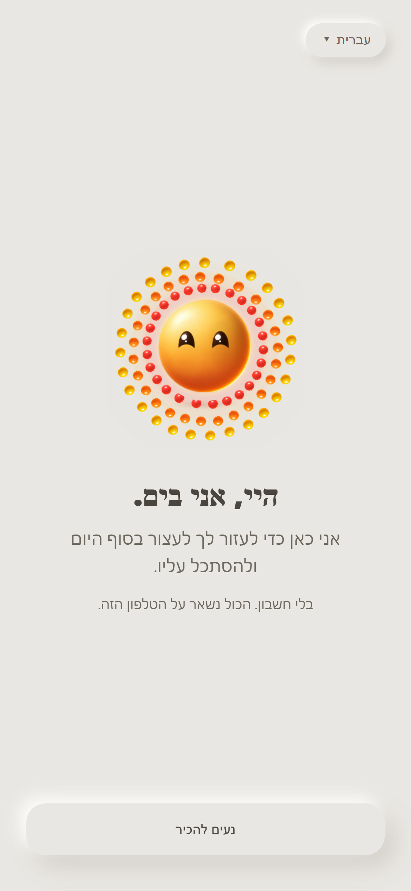
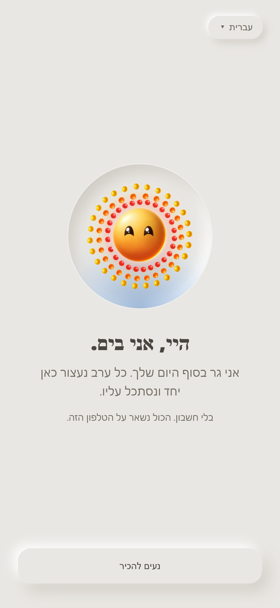
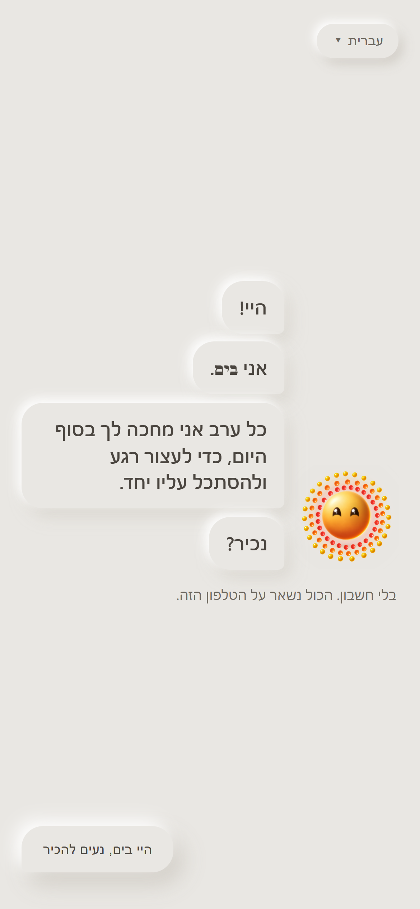

צעד 1: בים מופיע
זה הדבר הראשון שמישהו רואה, עוד לפני כל שאלה. בים אמיתי: אותו בים מגיליון הדמות המאושר, עם הבעות ותנועות שכבר קיימות. הוא מהנהן, קורץ, נרגע ונושם, בלי ציור חדש. התמונות כאן קפואות, אז לחץ על "לראות חי" כדי לראות אותו זז בטלפון. הטקסט ניטרלי מבחינת מגדר, כי עדיין לא שאלנו איך לפנות אליה.

א · שלום
בים במרכז, גדול. "היי, אני בים", משפט אחד שמסביר בשביל מה האפליקציה, ושורה שקטה: בלי חשבון, הכול נשאר על הטלפון.
הכי פשוט וברור, ואולי גם הכי צפוי.
לראות חי
ב · מתוך הבאר
הבאר של סיום יום מופיעה ומתמלאת באור, ובים עולה מתוכה. "אני גר בסוף היום שלך." ככה מהרגע הראשון רואים איפה הוא גר, אותה באר שתפגוש אחר כך במרכז החוגה.
ההמלצה שלי: הוא מקבל בית ותפקיד, לא רק שלום. זה גם מחבר למסך הראשי.
לראות חי
ג · הוא מדבר
בים קטן בצד, והמילים שלו מגיעות בבועות, אחת אחרי השנייה, כמו מישהו שמדבר. התשובה שלה היא בועה מהצד השני: "היי בים, נעים להכיר".
הכי חם ואישי, אבל זה כבר צ'אט. אם נבחר בזה, כל שאר הצעדים צריכים להמשיך באותה שיחה.
לראות חיכדי לבחור, כתוב לי א, ב או ג, או שילוב, למשל "ב, אבל עם הבועות של ג". אחרי שנסגור את צעד 1 נעבור לצעד 2: בים שואל איך קוראים לה.